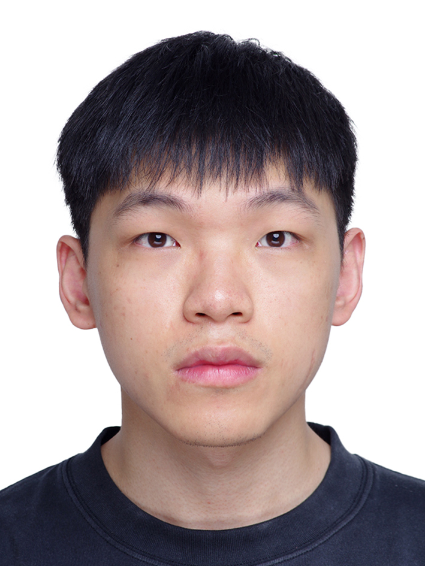

The Hong Kong University of Science and Technology
PhD, Aug. 2025 -
Hong Kong, China
PhD Student
Department of Electronic and Computer Engineering (ECE)
The Hong Kong University of Science and Technology (HKUST)

I am a PhD student in the Department of Electronic and Computer Engineering (ECE) at the Hong Kong University of Science and Technology (HKUST). I have published several papers at top-tier venues in computer engineering and solid-state circuits, including HPCA, MICRO, and ISSCC. My selected publications are listed in the attached CV.
PhD, Aug. 2025 -
Hong Kong, China
Master's Degree, Sep. 2022 - Jun. 2025
Beijing, China
Bachelor's Degree, Sep. 2018 - Jul. 2022
Hangzhou, China
Programming Languages: Python, CUDA/C++, Triton, Verilog/SystemVerilog, Chisel
Frameworks: PyTorch, Diffusers, Vortex, GPGPU-SIM, Ramulator
Artifact Evaluation, MICRO 2026
Outstanding Graduate of Tsinghua University, 2025
Email: xxiangaf@connect.ust.hk
Wechat: Shannon20001015